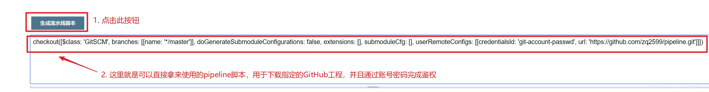

原文连接:https://www.cnblogs.com/bolingcavalry/p/11568774.html
本文是《Jenkins流水线(pipeline)实战》系列的第三篇，前面已对Jenkins流水线有了基本认识，也试过从GitHub下载pipeline脚本并执行，今天的实战是编写一段pipeline脚本，该脚本的作用是从GitHub下载一个Java项目(Maven构建的)，然后编辑构建此项目，并将构建结果制作成Docker镜像并且推送到私有镜像仓库；
系列文章地址
- 《Jenkins流水线(pipeline)实战之：从部署到体验》；
- 《让Jenkins执行GitHub上的pipeline脚本》；
-
环境信息
为了快速完成Jenkins部署，本次实战用到了Docker，请在实战前准备好以下环境： - 操作系统：Ubuntu 18.04.2 LT
- Jenkins：2.176.3
- Docker：19.03.1
私有镜像仓库：Harbor 1.9.0
实战内容简介
今天的实战功能如下图所示：
关于Docker私有镜像仓库Harbor
构建好的Docker镜像，会被推送到Docker镜像仓库Harbor，此仓库是我自己在本地搭建的，详细搭建步骤请参考《CentOS部署Harbor镜像仓库》
如果您有hub.docker.com网站的账号，也可以直接将镜像推送到此网站，这样大家都能使用到您制作的镜像了。关于本次用到的GitHub项目
本次实战会将一个GitHub上的项目先编译，再构建成Docker镜像，我这边准备了一个基于Maven构建的SpringBoot项目，这是个Hello world级别的工程，唯一特别之处是pom.xml中用到了Jib插件，用来将SpringBoot项目构建成Docker镜像。
该项目的源码可以从GitHub上下载，地址和链接信息如下表所示：
| 名称 | 链接 | 备注|
| :-------- | :----| :----|
| 项目主页| https://github.com/zq2599/blog_demos | 该项目在GitHub上的主页 |
| git仓库地址(https)| https://github.com/zq2599/blog_demos.git | 该项目源码的仓库地址，https协议 |
| git仓库地址(ssh)| git@github.com:zq2599/blog_demos.git | 该项目源码的仓库地址，ssh协议 |
这个git项目中有多个文件夹，本章的应用在hellojib文件夹下，如下图所示：
来看看此工程的pom.xml，重点是Jib插件部分，如下所示：
<!--使用jib插件-->
<plugin>
<groupId>com.google.cloud.tools</groupId>
<artifactId>jib-maven-plugin</artifactId>
<version>1.3.0</version>
<configuration>
<!--from节点用来设置镜像的基础镜像，相当于Docerkfile中的FROM关键字-->
<from>
<!--使用openjdk官方镜像，tag是8-jdk-stretch，表示镜像的操作系统是debian9,装好了jdk8-->
<image>openjdk:8-jdk-stretch</image>
</from>
<to>
<!--镜像名称和tag，使用了mvn内置变量${project.version}，表示当前工程的version-->
<image>bolingcavalry/hellojib:${project.version}</image>
</to>
<!--容器相关的属性-->
<container>
<!--jvm内存参数-->
<jvmFlags>
<jvmFlag>-Xms4g</jvmFlag>
<jvmFlag>-Xmx4g</jvmFlag>
</jvmFlags>
<!--要暴露的端口-->
<ports>
<port>8080</port>
</ports>
</container>
</configuration>
</plugin>
</plugins>
</build>使用Jib将SpringBoot项目构建成Docker镜像的更多信息，请参考《Docker与Jib(maven插件版)实战》；
用私有的GitHub仓库来实战
- 考虑到实际工作中大多数源码都没有对外公开，因此我这里也建了个私有GitHub仓库，地址是：https://github.com/zq2599/pipeline.git ，将前面提到的的hellojib工程所有源码都放入此仓库；
- pipeline下载私有仓库的源码时需要身份验证，验证方式后面会说到。
这个私有仓库里面并不只有hellojib一个工程，仓库的根目录下的hellojib目录里面才是构建镜像会用到的Maven工程：
创建Jenkins任务
- 创建一个名为build-image流水线任务：
- 接来下我们要借助Jenkins提供的语法工具来生成下载GitHub的pipeline代码，如下图，在设置任务的页面点击红框中的流水线语法按钮：
- 现在进入的页面是Jenkins辅助我们编写pipeline脚本的地方，请按照下图操作：
- 在弹出的窗口配置一个保存了GitHub账号和密码的秘钥配置项，请按照下图的数字顺序操作：
- 如下图红框所示，在下拉菜单中选择刚才创建的秘钥配置：
- 此时可以发现之前的红色错误提示已经消失（因为鉴权通过了），点击下图红框中的按钮即可生成pipeline源码：
 - 完整的pipeline脚本内容如下，其中Checkout阶段从GitHub下载的那段脚本，就是上图中自动生成的：
pipeline {
agent any
tools {
maven 'mvn-3.6.2'
}
stages {
stage('Checkout') {
steps {
echo '从GitHub下载项目源码'
checkout([$class: 'GitSCM', branches: [[name: '*/master']], doGenerateSubmoduleConfigurations: false, extensions: [], submoduleCfg: [], userRemoteConfigs: [[credentialsId: 'git-account-passwd', url: 'https://github.com/zq2599/pipeline.git']]])
}
}
stage('Build') {
steps {
echo '开始编译构建'
sh 'cd hellojib && mvn clean compile -U -DskipTests jib:dockerBuild'
}
}
stage('Push') {
steps {
echo '将本地Docker镜像推送到Harbor镜像仓库'
echo '给当前镜像设置带有Harbor地址和项目名称的Tag，这样才能推送到Harbor的library项目之下'
sh 'docker tag bolingcavalry/hellojib:0.0.1-SNAPSHOT 192.168.50.167/library/hellojib:0.0.1-SNAPSHOT'
echo '登录Harbor'
sh 'docker login 192.168.50.167 -u admin -p Harbor12345'
echo '登录chengg成功，开始推送镜像'
sh 'docker push 192.168.50.167/library/hellojib:0.0.1-SNAPSHOT'
}
}
stage('Clean') {
steps {
echo '清理Maven工程'
sh 'cd hellojib && mvn clean'
echo '删除镜像'
sh 'docker rmi bolingcavalry/hellojib:0.0.1-SNAPSHOT 192.168.50.167/library/hellojib:0.0.1-SNAPSHOT'
echo '清理完毕'
}
}
}
}- 将上面的pipeline脚本填写到build-image任务的流水线脚本输入框中，如下图：
- 点击下图红框中的立即构建即可开始执行流水线任务：
- 如果配置无误的话任务可以执行成功，如下图，每个阶段的执行结果和耗时都展现出来了：

- 如果您的任务构架失败了，点击下图红框中的小圆球，会打开任务执行的详细日志，用来检查错误原因：
- 登录Harbor网站，可以看到推送过来的镜像：
### 把pipeline脚本放在GitHub上
今天的实战中，编写的pipeline脚本是保存在任务的设置中的，还记得 《让Jenkins执行GitHub上的pipeline脚本》一篇的内容么？您可以尝试将今天的pipeline脚本存放在GitHub上，这样从构建脚本到业务项目都实现了版本控制，在多人开发阶段更加实用。
至此，基于pipeline操作的GitHub项目的实战就完成了，如果您正在寻求容器化环境的CI && CD方案，愿本文能给您提供一些参考。